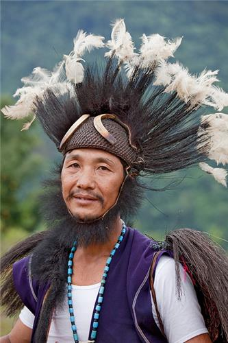

Arunachal Pradesh, located in the northeastern part of India, is known for its rich and diverse cultural heritage. Home to over 26 major tribes and numerous sub-tribes, the culture of Arunachal Pradesh is a vibrant tapestry of traditions, customs, festivals, and languages that reflect the state's ethnic diversity. The tribal communities of the region have preserved their customs and lifestyles over centuries, and their cultural expressions are deeply rooted in nature and spirituality.
Tribal Diversity:
The major tribes in Arunachal Pradesh include the Nyishi, Apatani, Adi, Galo, Monpa, and Wancho, among others. Each tribe has its own distinct traditions, languages, and festivals. For instance, the Nyishi people, one of the largest tribes, are known for their traditional attire made from cane, bamboo, and feathers, as well as their unique headgear adorned with hornbill beaks. The Apatani tribe, recognized for their sustainable agricultural practices and intricate facial tattoos, is another significant group. Despite the diversity, the people of Arunachal Pradesh share a common reverence for nature and follow animistic religious practices, worshipping natural elements like rivers, mountains, and trees.
Festivals:
Festivals in Arunachal Pradesh are colorful celebrations that bring the community together. Most festivals are closely tied to agriculture, marking the changing seasons or thanking deities for bountiful harvests. One of the most popular festivals is Losar, celebrated by the Monpa tribe, which marks the Tibetan New Year with prayers, dances, and feasts. Solung, celebrated by the Adi tribe, is a harvest festival featuring traditional dances and rituals. Dree Festival of the Apatani tribe is another important celebration, where prayers are offered for a good harvest and the welfare of the community.

Dance and Music:
Traditional dance and music are integral to the cultural fabric of Arunachal Pradesh. Folk dances like Aji Lhamu of the Monpa tribe and Ponung of the Adi tribe are performed during festivals and ceremonies, often accompanied by drums, cymbals, and flutes. Songs are usually passed down orally and convey stories of ancestors, nature, and spiritual beliefs.
Art and Craft:
The state is also known for its exquisite handloom and handicrafts. Each tribe has its own distinctive style of weaving, creating beautiful textiles with intricate designs. Bamboo and cane work are highly developed, with artisans producing a wide range of items, from baskets and furniture to decorative objects.
In essence, the culture of Arunachal Pradesh is a harmonious blend of tribal traditions, nature worship, and artistic expression, offering a unique glimpse into the life of its indigenous people.